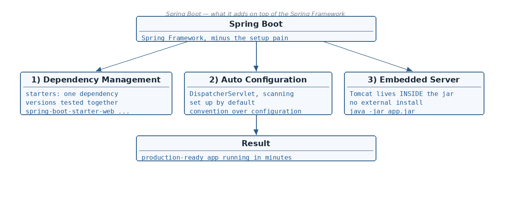

The 3 big challenges of plain Spring MVC that Spring Boot solves · What "Convention over Configuration" means · JAR…
☕ 5 min read · 🎬 Video walkthrough · 📊 UML diagram · 💻 Runnable code
⚡ In a nutshell — The 3 big challenges of plain Spring MVC that Spring Boot solves · What "Convention over Configuration" means · JAR vs WAR packaging — and when to use which · How a minimal Spring Boot application actually looks in code
Before Spring Boot, building a Spring MVC application meant a lot of manual setup. Spring Boot removes that pain in three ways:

No need for adding different dependencies separately — and no more "compatible version" headache. One starter brings everything needed, with versions that are tested to work together.
<!-- pom.xml — one starter instead of 10+ individual, version-matched jars -->
<parent>
<groupId>org.springframework.boot</groupId>
<artifactId>spring-boot-starter-parent</artifactId>
<version>3.2.5</version>
</parent>
<dependencies>
<dependency>
<groupId>org.springframework.boot</groupId>
<artifactId>spring-boot-starter-web</artifactId>
<!-- no <version> needed: the parent manages it -->
</dependency>
</dependencies>
Good to know: common starters —
spring-boot-starter-web(REST + embedded Tomcat),spring-boot-starter-data-jpa(JPA + Hibernate),spring-boot-starter-test,spring-boot-starter-aop,spring-boot-starter-actuator.
No need for separately configuring DispatcherServlet, AppConfig, @EnableWebMvc, @ComponentScan — Spring Boot adds them internally, by default.
// This ONE annotation replaces all of that manual configuration.
// @SpringBootApplication = @Configuration + @EnableAutoConfiguration + @ComponentScan
@SpringBootApplication
public class MyApplication {
public static void main(String[] args) {
SpringApplication.run(MyApplication.class, args);
}
}
The servlet container (Tomcat by default) is already embedded. You do not install and configure an external Tomcat and deploy a WAR into it — you just run the JAR:
mvn clean package
java -jar target/my-application-0.0.1-SNAPSHOT.jar
# Tomcat starts INSIDE your app on port 8080
Example of convention over configuration: Spring Boot assumes the server port is
8080. Don't like it? Override one line inapplication.properties:server.port=9090. The convention worked until you chose otherwise.
Added: interviewers almost always follow up with "but HOW does Spring Boot know what to configure?" — this is the answer.
@SpringBootApplication contains @EnableAutoConfiguration.META-INF/spring/org.springframework.boot.autoconfigure.AutoConfiguration.imports
(in older Boot 2.x: META-INF/spring.factories) inside the spring-boot-autoconfigure jar.// Simplified idea of what DataSourceAutoConfiguration looks like inside Spring Boot:
@AutoConfiguration
@ConditionalOnClass(DataSource.class) // only if a JDBC driver/pool is on classpath
public class DataSourceAutoConfiguration {
@Bean
@ConditionalOnMissingBean // only if YOU did not define a DataSource bean
public DataSource dataSource(DataSourceProperties props) {
return props.initializeDataSourceBuilder().build();
}
}
Added: this is why "convention over configuration" works — add
spring-boot-starter-data-jpaand aDataSourceappears automatically; define your own@Bean DataSourceand Boot silently backs off (@ConditionalOnMissingBean).
Excluding an auto-configuration you don't want:
@SpringBootApplication(exclude = DataSourceAutoConfiguration.class)
public class MyApplication { ... }
# or in application.properties
spring.autoconfigure.exclude=org.springframework.boot.autoconfigure.jdbc.DataSourceAutoConfiguration
Added: to see the decisions Boot made, start the app with
--debug— the "CONDITIONS EVALUATION REPORT" lists every auto-configuration that matched (and why) and every one that did not.
SpringApplication.run()?Added: a favourite interview question. In order: 1. Creates the
ApplicationContext(IoC container) — picks servlet/reactive/plain type automatically. 2. Loads environment:application.properties/application.yml, profiles, command-line args. 3. Runs component scan + auto-configuration, creates and wires all beans. 4. Starts the embedded server (Tomcat on 8080 by default). 5. Calls anyCommandLineRunner/ApplicationRunnerbeans — your "run once at startup" hook.
java -jar app.jar — Deploy into Tomcat / JBoss / WebLogic<packaging>war</packaging><!-- Only if you NEED a WAR (legacy app server): -->
<packaging>war</packaging>
<!-- and exclude/mark embedded Tomcat as provided -->
<dependency>
<groupId>org.springframework.boot</groupId>
<artifactId>spring-boot-starter-tomcat</artifactId>
<scope>provided</scope>
</dependency>
Added: the fastest way to create a Spring Boot project is start.spring.io (Spring Initializr) — pick Maven, Java, the Spring Boot version, add the
Webdependency, click Generate, unzip, and runmvn spring-boot:run.
// A complete working REST application — this is ALL the code you need:
@SpringBootApplication
@RestController
public class HelloApplication {
public static void main(String[] args) {
SpringApplication.run(HelloApplication.class, args);
}
@GetMapping("/hello")
public String hello() {
return "Hello from Spring Boot!";
}
}
// Run it, open http://localhost:8080/hello
jakarta.* packages (not javax.*). Plan upgrades around this.spring.threads.virtual.enabled=true — lets Tomcat serve each request on a lightweight virtual thread. Huge win for I/O-bound services without reactive rewrite.mvn -Pnative native:compile produces instant-startup, low-memory binaries — relevant for serverless/scale-to-zero.server.shutdown=graceful) — see Topic 19.DispatcherServlet, @ComponentScan etc. set up by default), embedded server (Tomcat inside).@SpringBootApplication = @Configuration + @EnableAutoConfiguration + @ComponentScan.java -jar); WAR = web bundle for an external server.@EnableAutoConfiguration → reads AutoConfiguration.imports → applies classes guarded by @ConditionalOnClass / @ConditionalOnMissingBean; exclude via @SpringBootApplication(exclude = ...); inspect with --debug.Next topic: Layered Architecture — how Controller, Service and Repository layers are organized.
👏 Found this useful? Give it a few claps so more developers discover it, and follow for the whole series — every article ships with a UML diagram, runnable code, a narrated video, and a companion PDF. Happy building! 🚀